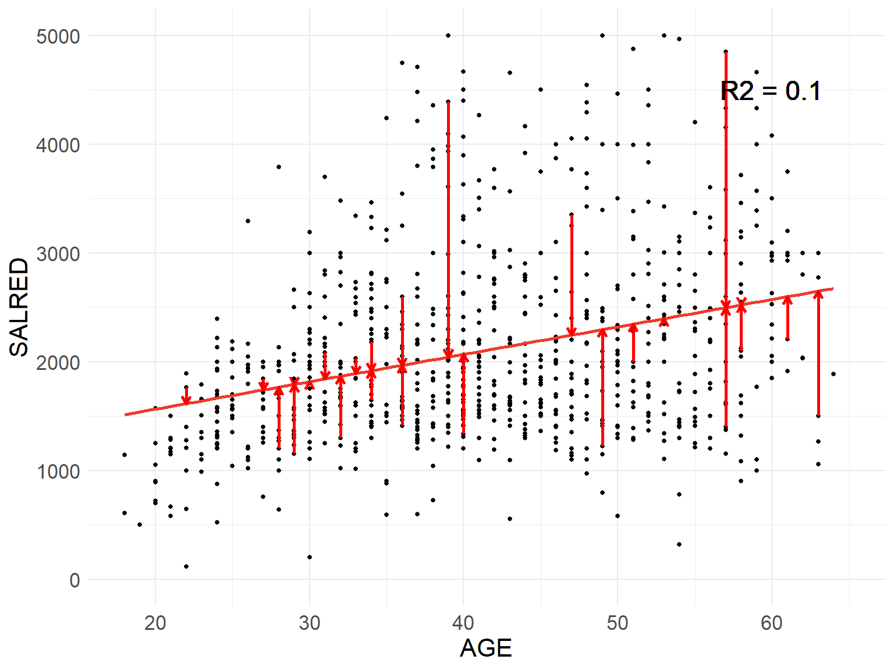
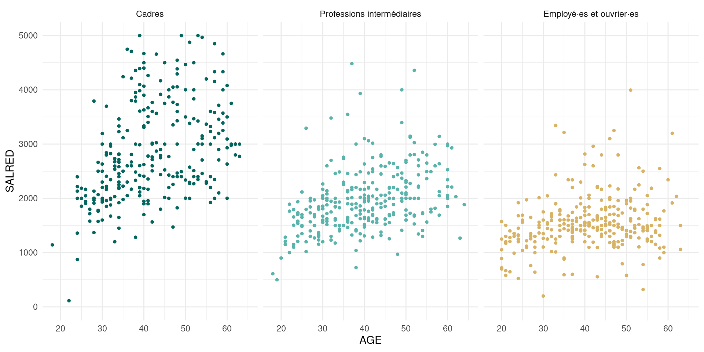
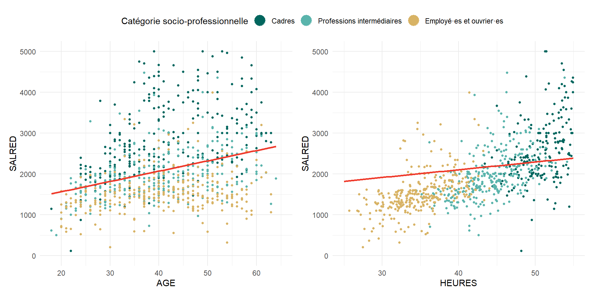

La régression linéaire simple est une technique économétrique qui permet de résumer une relation entre deux variables et de s’interroger sur sa significativité statistique. Le nuage de points y est résumé par une droite, appelée droite de régression.
Ce modèle tente de lier les variations d’une variable expliquée (ou dépendante) à celles d’une variable explicative (ou indépendante, covariable, régresseur).
On dit qu’un modèle de régression est multiple plutôt que simple lorsqu’on étend l’explication à plusieurs variables explicatives.
Tout comme les indicateurs statistiques et les croisements de variables avec leurs tests statistiques associés, les modèles de régression ont donc pour objectif de mesurer les relations de dépendance entre plusieurs grandeurs ou dimensions du monde social.
Les modèles de régression linéaires s’inspirent des équations linéaires de la forme \(y = ax+b\) où \(b\) est l’ordonnée à l’origine, soit la valeur de \(y\) quand \(a=0\), et \(a\) la pente, soit le nombre d’unités d’augmentation de \(y\) quand \(x\) augmente d’une unité.
Le modèle s’écrit sous la forme d’une équation applicable à tout individu statistique \(i\) :
\[ salaire_i = \beta_0+\beta_1 \times age_i+\varepsilon_i \]
Estimer un modèle consister à déterminer la valeur des paramètres \(β_0\) et \(β_1\) de manière à maximiser l’ajustement du modèle aux données. Cela revient à chercher \(β_0\) et \(β_1\) tels que, à partir de l’âge d’un individu, on soit en mesure de déterminer son salaire en se trompant en moyenne le moins possible.
La méthode des moindres carrés ordinaires maximise l’ajustement en minimisant la somme des termes résiduels \(\varepsilon_i\). \(R_2\) correspond à la part de la variance expliquée par notre modèle, c’est une mesure de sa qualité.

Call:
lm(formula = SALRED ~ AGE, data = sample_eec, subset = AGE %in%
18:65 & SALRED %in% 0:5000)
Residuals:
Min 1Q Median 3Q Max
-2102.5 -545.0 -149.2 375.6 2956.3
Coefficients:
Estimate Std. Error t value Pr(>|t|)
(Intercept) 1058.985 110.379 9.594 <2e-16 ***
AGE 25.249 2.614 9.659 <2e-16 ***
---
Signif. codes: 0 '***' 0.001 '**' 0.01 '*' 0.05 '.' 0.1 ' ' 1
Residual standard error: 818.8 on 859 degrees of freedom
Multiple R-squared: 0.09798, Adjusted R-squared: 0.09693
F-statistic: 93.31 on 1 and 859 DF, p-value: < 2.2e-16La constante (intercept) vaut 1060. Le modèle permet d’estimer qu’en moyenne, le salaire à 0 an est de 1060 euros.
Le coefficient pour l’âge est significatif et il vaut 25,3. Le modèle permet d’estimer qu’une année d’âge augmente en moyenne le salaire de 25,3 euros.
À 18 ans, le salaire estimé par le modèle est de \(1060 + 25,3\times18 = 1515\) euros.
À 60 ans, le salaire estimé par le modèle est de \(1060 + 25,3 \times 60 = 2578\) euros.
Une première façon de complexifier le modèle consiste à introduire des variables indicatrices : elles permettent une augmentation de niveau (en modifiant la constante) de la variable expliquée.
Ainsi, la catégorie socio-professionnelle peut-être exprimée par un codage disjonctif de 3 variables : la variable \(cadre_i\) qui vaut 1 si l’individu est cadre et 0 sinon; la variable \(prof\_inter_i\) qui vaut 1 si l’individu est profession intermédiaire et 0 sinon; la variable \(emp\_ouv_i\) qui vaut 1 si l’individu est employé·e ou ouvrier·e et 0 sinon.
Dans l’idée, on aurait envie de modéliser :
\[ salaire_i = \beta_0 + \beta_1 \times age_i+ \beta_2 \times cadre_i + \beta_3 \times prof\_inter_i + \beta_4 \times emp\_ouv_i + \varepsilon_i \]
Qu’on écrit en réalité avec une catégorie en moins, puisque le coefficient d’une catégorie parmi les trois devient la référence et correspond à \(\beta_0\).
\[ salaire_i = \beta_0 + \beta_1 \times age_i+ \beta_2 \times prof\_inter_i + \beta_3 \times emp\_ouv_i + \varepsilon_i \] Le salaire d’un·e cadre est estimé par : \[ salaire_i = \beta_0 + \beta_1 \times age_i+ \beta_2 \times 0 + \beta_3 \times 0 + \varepsilon_i \]
Quand celui d’un·e employé·e ou d’un·e ouvrier·e est estimé par :
\[ salaire_i = \beta_0 + \beta_1 \times age_i+ \beta_2 \times 0 + \beta_3 \times emp\_ouv_i + \varepsilon_i \]
Call:
lm(formula = SALRED ~ AGE + CSE, data = sample_eec, subset = AGE %in%
18:65 & SALRED %in% 0:5000)
Residuals:
Min 1Q Median 3Q Max
-2295.50 -411.00 -56.07 283.85 2592.91
Coefficients:
Estimate Std. Error t value Pr(>|t|)
(Intercept) 1923.441 93.414 20.59 <2e-16 ***
AGE 22.094 2.022 10.93 <2e-16 ***
CSEProfessions intermédiaires -851.817 53.409 -15.95 <2e-16 ***
CSEEmployé·es et ouvrier·es -1277.585 53.392 -23.93 <2e-16 ***
---
Signif. codes: 0 '***' 0.001 '**' 0.01 '*' 0.05 '.' 0.1 ' ' 1
Residual standard error: 631.4 on 857 degrees of freedom
Multiple R-squared: 0.4648, Adjusted R-squared: 0.4629
F-statistic: 248.1 on 3 and 857 DF, p-value: < 2.2e-16La constante vaut 1923. En moyenne, le salaire d’un cadre (catégorie de référence) âgé de 0 ans est de 1923 euros.
Le coefficient de l’âge est significatif et il vaut 22,1. En moyenne et indépendamment de la catégorie socio-professionnelle, une année en plus augmente le salaire de 22,1 euros.
Le coefficient des professions intermédiaires est significatif et vaut -852. En moyenne, et indépendamment de l’âge, passer de la catégorie cadre à la catégorie profession intermédiaire fait baisser le salaire de 852 euros.
Ajuster le modèle seulement en changeant le niveau des droites peut s’avérer insuffisant. Est-ce que les employé·es et les ouvrier·es bénéficient réellement de la même progression salariale au cours de leur carrière que les cadres et les professions intermédiaires ?
Les effets d’interaction ont pour objectif de modifier – en plus de la constante – la pente des droites, donc l’intensité de la relation entre la variable expliquée et la variable explicative. Chaque catégorie se voit attribué deux coefficients propres :
\[ salaire_i = \beta_0 + \beta_1 \times age_i+ \beta_2 \times prof\_inter_i + \beta_3 \times emp\_ouv_i + \beta_4 \times (age_i \times prof\_inter_i) + \beta_5 \times(age_i \times emp\_ouv_i) + \varepsilon_i \]
En le décomposant, on a l’effet de niveau de la catégorie socioprofessionnelle :
\[ \beta_0 + \beta_2 \times prof\_inter_i + \beta_3 \times emp\_ouv_i \]
Auquel on additionne l’effet de l’âge, en fonction de la catégorie socio-professionnelle :\[ \beta_1 \times age_i+ \beta_4 \times (age_i \times prof\_inter_i) + \beta_5 \times(age_i \times emp\_ouv_i)\]
Call:
lm(formula = SALRED ~ AGE * CSE, data = sample_eec, subset = AGE %in%
18:65 & SALRED %in% 0:5000)
Residuals:
Min 1Q Median 3Q Max
-2029.58 -386.42 -67.95 262.71 2592.76
Coefficients:
Estimate Std. Error t value Pr(>|t|)
(Intercept) 1365.733 157.001 8.699 < 2e-16 ***
AGE 35.357 3.621 9.763 < 2e-16 ***
CSEProfessions intermédiaires -292.147 211.937 -1.378 0.16842
CSEEmployé·es et ouvrier·es -266.608 210.249 -1.268 0.20512
AGE:CSEProfessions intermédiaires -13.312 4.991 -2.667 0.00779 **
AGE:CSEEmployé·es et ouvrier·es -24.443 4.921 -4.967 8.21e-07 ***
---
Signif. codes: 0 '***' 0.001 '**' 0.01 '*' 0.05 '.' 0.1 ' ' 1
Residual standard error: 623.3 on 855 degrees of freedom
Multiple R-squared: 0.4798, Adjusted R-squared: 0.4768
F-statistic: 157.7 on 5 and 855 DF, p-value: < 2.2e-16Le coefficient de l’âge est significatif et vaut 35,4. En moyenne chez les cadres (catégorie de référence), une année de plus augmente de 35,4 euros le salaire.
Le coefficient d’interaction entre l’âge et la catégorie profession intermédiaire est significatif et vaut 13,3. En moyenne, passer de la catégorie cadre à celle de profession intermédiaire fait baisser de 13,3 euros l’augmentation salariale gagnée chaque année. Ainsi, en moyenne chez les professions intermédiaires, une année de plus augmente de \(35,4-13,3= 22,1\) euros le salaire.
Les coefficients des deux catégories socio-professionnelles ne sont pas significatifs. En moyenne, indépendamment de l’âge et en tenant compte de la progression salariale propre à chaque catégorie socio-professionnelle, passer de la catégorie cadre à la catégorie profession intermédiaire ne fait pas significativement baisser le salaire.
Autrement dit, il existe bien des inégalités salariales entre catégories professionnelles mais celles-ci se constituent au fil de la carrière, quand les individus deviennent plus âgés.
Le premier modèle de régression linéaire multiple présenté permettait d’estimer, indépendamment de l’âge, l’augmentation moyenne du salaire selon qu’on appartienne à telle ou telle catégorie socio-professionnelle. Or, on peut s’interroger sur le rapport de causalité : les cadres sont-ils mieux payés uniquement parce que les professions qu’ils exercent sont mieux reconnues et rétribuées, ou est-ce que d’autres facteurs expliquent ces écarts salariaux ?
NB : les heures de travail sont simulées pour l’exemple, il ne faut pas les prendre comme des données réelles
On parle d’erreur ou de biais de la variable omise lorsqu’on rend compte de la variance d’une variable expliquée par une variable explicative donnée et qu’on ne tient pas compte d’une troisième variable susceptible d’expliquer la variance, elle-même corrélée avec la variable explicative.
L’erreur de la variable manquante vient biaiser l’estimation de l’effet causal : on attribue à la variable explicative des variations de la variable expliquée qui sont en réalité dues à la variable manquante.
La régression simple du salaire par l’âge ne fait que comparer les salaires de personnes plus ou moins âgées. Pour que cette comparaison soit instructive, il faut être sûr qu’on a comparé des personnes comparables. « Comparer du comparable », c’est respecter le critère d’analyse toutes choses égales par ailleurs (ou ceteris paribus) : les personnes comparées ne doivent différer au départ que par leur âge. On a déjà modifié notre modèle pour mesurer l’effet de la catégorie socio-professionnelle. Or, pour interpréter ces effets de manière pertinente, il faut s’assurer qu’on ne confond pas ce qui relève de la position des catégories sur le marché du travail avec ce qui relève du temps travaillé.
Le salaire est fonction du temps de travail. Or, les catégories socio-professionnelles les mieux rémunérées sont aussi celles qui travaillent le plus. Il y a donc un biais liée à une troisième variable omise, le temps de travail, qui nous induisait en erreur : on prenait pour l’effet de la catégorie socio-professionnelle ce qui est en réalité l’effet de l’inégalité en moyenne du temps de travail.
On met en place un nouveau modèle avec une variable quantitative du temps de travail mensuel : \[ salaire_i = \beta_0 + \beta_1 \times age_i + \beta_2 \times prof\_inter_i + \beta_3 \times emp\_ouv_i + \beta_4 \times heures_i + \varepsilon_i \]
Dans cette situation simulée où les cadres travailleraient en moyenne plus longtemps que les professions intermédiaires et les employé·es et ouvrier·es, on obtient :
| Résultats de deux modèles de régression du salaire | ||||||
| Caractéristique | Modèle 1 | Modèle 2 | ||||
|---|---|---|---|---|---|---|
| Beta | 95% IC1 | p-valeur | Beta | 95% IC1 | p-valeur | |
| AGE | 22 | 18 – 26 | <0,001 | 16 | 13 – 20 | <0,001 |
| CSE | ||||||
| Cadres | — | — | — | — | ||
| Professions intermédiaires | -852 | -957 – -747 | <0,001 | -201 | -327 – -76 | 0,002 |
| Employé·es et ouvrier·es | -1 278 | -1 382 – -1 173 | <0,001 | 79 | -120 – 277 | 0,4 |
| HEURES | 79 | 69 – 89 | <0,001 | |||
| 1 IC = intervalle de confiance | ||||||
Nous avons vu jusqu’à présent la modélisation de variables quantitatives. Cependant, il est plus courant en sciences sociales de vouloir étudier des dimensions qualitatives.
Les variables peuvent porter sur un phénomène que l’on considère qualitatif « par nature » ; par exemple, il va s’agir d’étudier le passage ou non en classe supérieure, le succès ou l’échec à un concours, le fait d’être propriétaire ou non de son appartement, le fait de voter ou non à une élection, le fait d’avoir un casier judiciaire ou non, etc.
Il arrive aussi que l’on veuille étudier un phénomène continu en théorie, mais dont la mesure empirique nous est, pour une raison ou une autre, inaccessible. On peut alors choisir de construire une variable qualitative indicatrice d’un phénomène observé qui serait la manifestation visible d’une variable latente.
Les modèles de régression logistique sont une extension des modèles linéaires. Plutôt d’estimer une valeur, on va tenter d’estimer une probabilité.
La logique de lecture des modèles logistiques est similaire à celle des modèles linéaires. Il existe néanmoins une difficulté liée à la nature de ce que modèle estime : on ne modélise pas les probabilités en elles-mêmes, mais une fonction qui les contient. \[ log(\frac{P_i}{1-P_i})=logit(P_i)=\beta_0 + \beta_1X_{1i}+\beta_2X_{2i}+...+\beta_kX_{ki}+\varepsilon_i \]On appelle odd ou chances le rapport entre la probabilité \(P\) d’occurrence de l’évènement binaire considéré et la probabilité \(1-P_i\) de non-occurrence de l’évènement.
Par exemple, si la probabilité de tomber malade est de \(0,8\), la probabilité de ne pas tomber malade est de \(1-0,8 = 0,2\). L’odd ou les chances valent ainsi \(\frac{0,8}{0,2} = 4\) : on attend 4 fois plus de personnes malades que de personnes saines.
On appelle logit la fonction qui calcule le logarithme de ces chances.
On appelle rapport de chances ou odds ratio le rapport \(\frac{OR_1}{OR_2}\) entre deux chances ou odds. Si les chances de tomber malade chez les nourrissons valent 10 contre seulement 5 chez les adultes, l’odd ratio associé vaut \(\frac{10}{5}=2\). L’interprétation est complexe car ce n’est pas un simple rapport de probabilités : on ne peut pas dire que la probabilité de tomber malade pour un nourrisson est deux fois plus élevée que celle d’un adulte.
On gardera seulement en tête qu’un odd ratio supérieur à 1 signifie que la catégorie au numérateur a de plus grandes chances que la catégorie au dénominateur; on attend donc plus de personnes malades que saines chez les nourrissons que chez les adultes.
La question de recherche :
“dans quelle mesure les magistrat·e·s tendent-ils·elles à imposer, parallèlement aux ressources et demandes juridiques des parties et aux règles formelles régissant la procédure judiciaire, des conditions spécifiques et asymétriques aux différentes catégories de justiciables pour exercer leurs droits au tribunal ?” pages 528-529
L’objectif de l’article :
“L’enjeu de notre réflexion est d’articuler […] deux aspects de la fabrique des inégalités d’usages et de traitement de la justice : d’une part, les usages différentiels du droit et du protocole judiciaire auxquels procèdent les propriétaires et les locataires (en termes de présence à l’audience, de recours à un·e avocat·e, etc.) ; et d’autre part, l’asymétrie des conditions – formelles mais également informelles – de recevabilité et d’efficacité qu’imposent les magistrat·e·s aux stratégies de ces deux catégories de justiciables” page 529